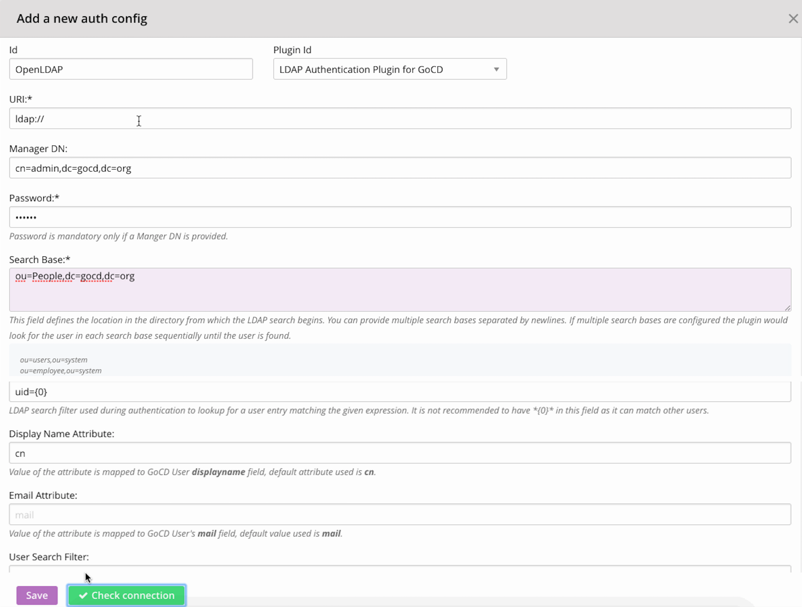

A newly installed GoCD server does not require users to authenticate. This is great for a trial. However, it is one of the first things you should change, as soon as you decide to use GoCD more widely.
GoCD has two methods of authentication built into it: Password-file based authentication and LDAP/Active Directory authentication. You can also choose from a collection of community-maintained plugins for other methods of authentication, such as using Google or GitHub OAuth.
GoCD doesn’t restrict you to only one source of authentication but allows you to connect multiple authentication sources. For instance, a user can have combination of password-file based and LDAP authentication or GoCD can be setup to use multiple LDAP servers.
In this post, you will learn about setting upon OpenLDAP and then, setting up GoCD to use that OpenLDAP instance for authentication.
OpenLDAP is an open-source implementation of the LDAP protocol.
Prerequisites
- Ubuntu
- Latest GoCD server
- Knowledge of LDAP (https://ldap.com/basic-ldap-concepts/)
Step 1 — Installing and Configuring the OpenLDAP server
Our first step is to install the OpenLDAP server and some associated utilities. The packages we need are all available in Ubuntu's default repositories.
Log into your server and run below commands.
sudo apt-get update
sudo apt-get install slapd ldap-utils
The above will install and start an openLDAP server with the database suffix of dc=example,dc=com. In order to update suffix, run below command.
sudo dpkg-reconfigure slapd
You should see below output:

At this point, your LDAP server is configured and running. Open up the LDAP port on your firewall so external clients can connect:
sudo ufw allow ldap
Let's test our LDAP connection using ldapwhoami, which should return the username we're connected as:
ldapwhoami -H ldap:// -x
Output:
anonymous
This should give you “anonymous” as result, since we ran it without logging into the LDAP server. This means the LDAP server is running and responding.
If this gives you connect error something similar to below, try checking the ldap service status /etc/init.d/slapd status and restart if it is stopped.
ldap_sasl_bind(SIMPLE): Can't contact LDAP server (-1)
Next we'll add a user to the OpenLDAP server and see if we are able to connect.
Step 2 — Add user to LDAP server
Create an add.ldif file and add below content for user details:
dn: ou=People,dc=gocd,dc=org
objectClass: organizationalUnit
ou: People
dn: ou=Groups,dc=gocd,dc=org
objectClass: organizationalUnit
ou: Groups
dn: uid=john,ou=People,dc=gocd,dc=org
objectClass: inetOrgPerson
objectClass: shadowAccount
uid: john
sn: Doe
givenName: John
cn: John Doe
displayName: John Doe
userPassword: badger
Execute below command to add user to LDAP:
ldapadd -x -D cn=admin,dc=gocd,dc=org -W -f add.ldif
Output:
ldapadd -x -D cn=admin,dc=gocd,dc=org -W -f add.ldif
Enter LDAP Password:
adding new entry "ou=People,dc=gocd,dc=org"
adding new entry "ou=Groups,dc=gocd,dc=org"
adding new entry "uid=john,ou=People,dc=gocd,dc=org"
Check if the user is successfully added:
ldapsearch -x -LLL -b dc=gocd,dc=org 'uid=john' cn gidNumber
Output:
ldapsearch -x -LLL -b dc=gocd,dc=org 'uid=john' cn gidNumber
dn: uid=john,ou=People,dc=gocd,dc=org
cn: John Doe
If you need to add another user at some point, you can do it by creating add_user.ldif file with below content.
dn: uid=bob,ou=People,dc=gocd,dc=org
objectClass: inetOrgPerson
objectClass: shadowAccount
uid: bob
sn: builder
givenName: bob
cn: Bob Builder
displayName: Bob Builder
userPassword: badger
Run below command to add another user:
ldapadd -x -D cn=admin,dc=gocd,dc=org -W -f add_user.ldif
Change user password:
ldappasswd -x -D cn=admin,dc=gocd,dc=org -W -S "uid=john,ou=People,dc=gocd,dc=org"
Step 3 — Setup LDAP authentication for GoCD
This configuration will help you connect to the OpenLDAP server you setup.

[Screenshot of the GoCD LDAP authentication setup]

Users can also configure this via Config XML tab on the Admin section:
<security>
<authConfigs>
<authConfig id="OpenLDAP" pluginId="cd.go.authentication.ldap">
<property>
<key>Url</key>
<value>ldap://</value>
</property>
<property>
<key>SearchBases</key>
<value>ou=People,dc=gocd,dc=org</value>
</property>
<property>
<key>ManagerDN</key>
<value>cn=admin,dc=gocd,dc=org</value>
</property>
<property>
<key>Password</key>
<encryptedValue>3mfoJ3hSBBM=</encryptedValue>
</property>
<property>
<key>UserSearchFilter</key>
<value />
</property>
<property>
<key>UserLoginFilter</key>
<value>uid={0}</value>
</property>
<property>
<key>DisplayNameAttribute</key>
<value>cn</value>
</property>
<property>
<key>EmailAttribute</key>
<value />
</property>
</authConfig>
</authConfigs>
</security>
More info on GoCD LDAP configuration can be found here - https://github.com/gocd/gocd-ldap-authentication-plugin
Conclusion
Our goal is to provide flexible endpoints so that people can use any/multiple authorization service providers of their choice. As demonstrated in the above example, we were able to add a light-weight OpenLDAP server with ease.